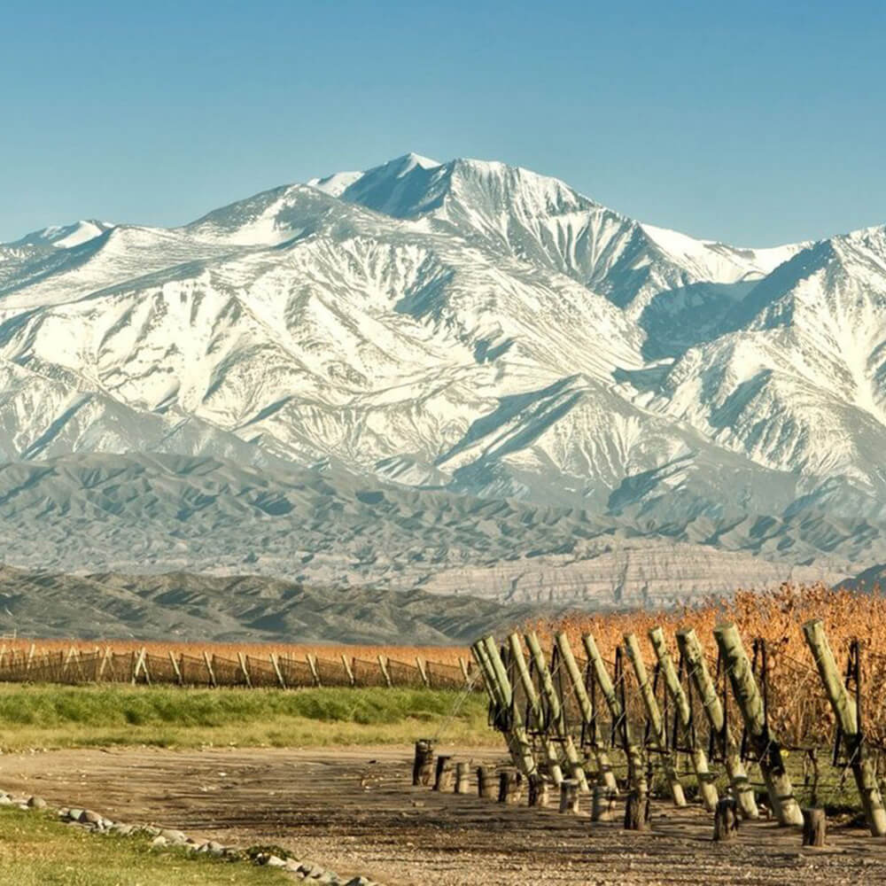

Our Malbec is made via carbonic maceration and fermented with select, native yeasts at a temperature between 78-82ºF, with a combination of pump-overs and delestage. The pum- povers are done forcefully at the beginning of the fermentat- ion and more gently towards the end in order to extract tannin from the skin of the grapes, not the seeds.
Born in Chile, Sebastián San Martín’s love of nature brought him to wine, but it wasn’t until when he fell in love that he followed his fiancé to Argentina. Years into his career — after he was appointed technical manager for the Argento Wine Company — Sebastián discovered that his great-grandfather had also worked as an expert in viticulture for the Sultan of Turkey: he’d traveled to Argentina, hired by the Argentinean government, to advise on vineyard management. The same path that Sebastián is walking, in the same place, 100 years apart.
With its high altitude and desert climate, Mendoza is regarded as the best region in the world to grow malbec grapes. Archer Roose’s malbec wine hails from an 8th-generation, family-owned vineyard with views of the Andes and the Tunuyán River.
We believe the best pairing for wine is whatever you already had planned! But, if you did want to explore malbec wine pairings, we have a few favorites below.
Perfect pairing tip: malbec and chocolate were absolutely made for each other!
* Barbecue
* Lean red meats
* Bell peppers, chili peppers
* Sage & rosemary
* “Stinky” cheeses (goat cheese, Manchego, Blue cheese, Gorgonzola, Stilton)
* Mushroom-based sauces
Speaking of barbecue, Chef Adam Moore recommends using our malbec in a bold and full-bodied balsamic marinade for halloumi and vegetables, which are then finished off on the grill. Perfectly delicious, globally inspired. Need we say more?